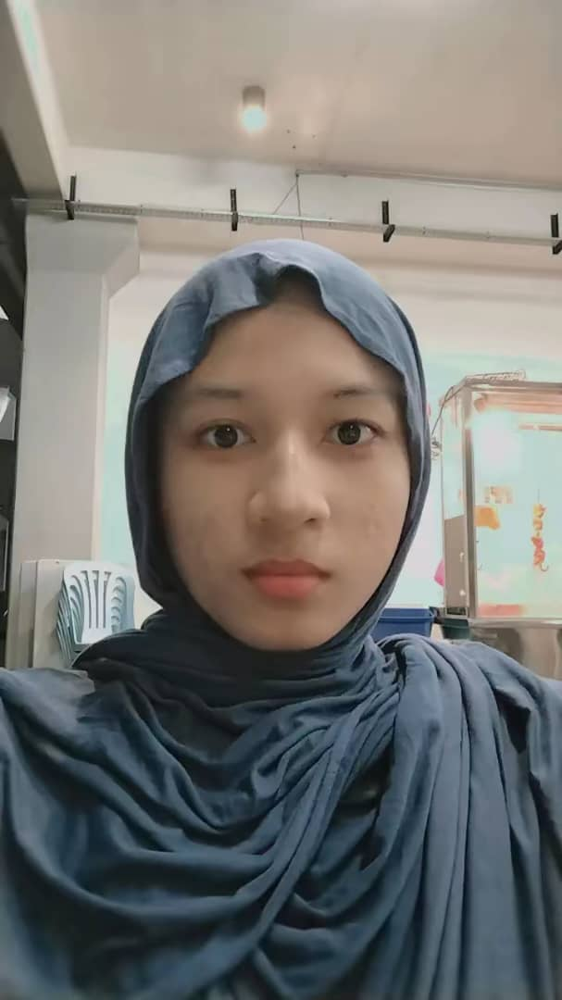

Biodata
Back to Home

Aellisa Nabihah Binti Azhan
Age:
23
Education:
Universiti Tun Hussein Onn Malaysia (UTHM)
Interests:
Web Development, UI/UX Design, Networking
Hobbies:
Drawing, Badminton, Gaming
Contact:
lisabihah2001@gmail.com
Religion:
Islam